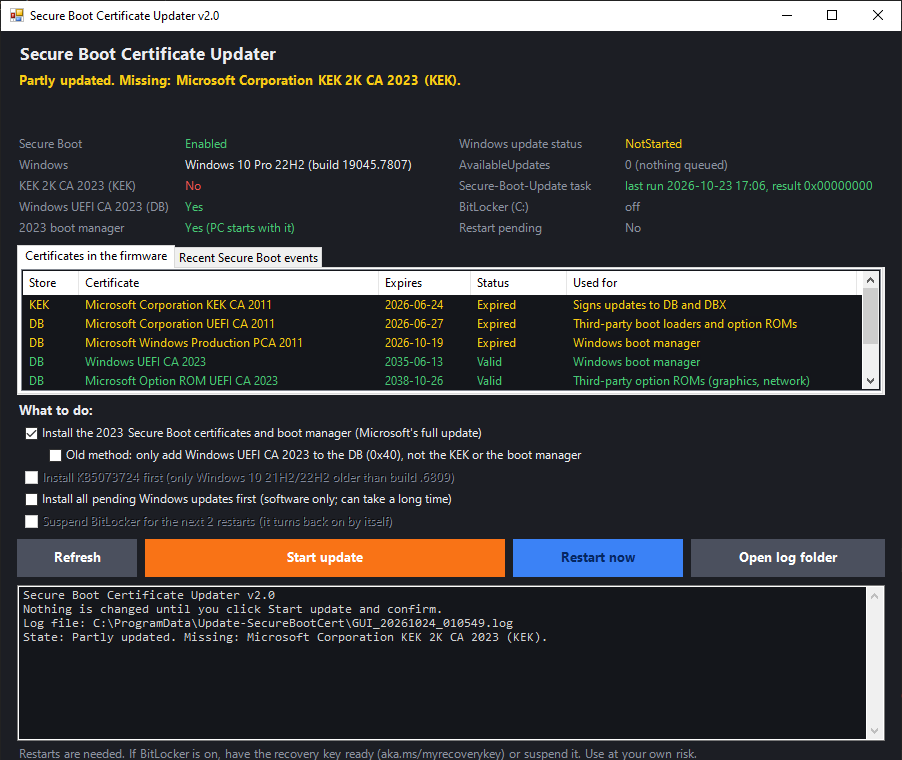
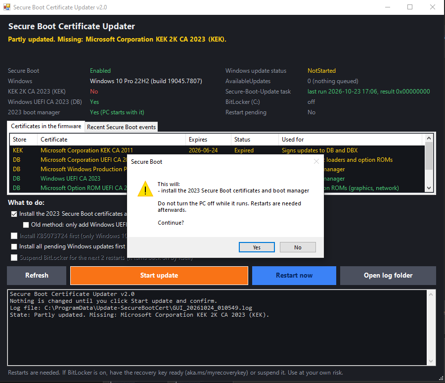

Microsoft 2011 Secure Boot 認證已於 2026 年過期。本工具自動檢測系統狀態，安裝 2023 新認證與簽署版啟動管理器，確保 Windows 持續獲得啟動層級安全更新。Microsoft 2011 Secure Boot certificates expired in 2026. This tool automatically detects your PC state, installs 2023 certificates and the 2023-signed boot manager, ensuring continuous boot-level security updates.
Secure Boot 認證過期不會讓電腦無法啟動，但會停止接收啟動層級的安全更新。Expired Secure Boot certificates won't stop your PC, but will halt boot-level security fixes.
讀取韌體中的認證，檢查 Windows 更新進度，找出缺失的 2023 認證與啟動管理器。Reads firmware certificates, checks Windows update progress, identifies missing 2023 certs and boot manager.
安裝 2023 年 KEK、DB 認證和簽署版啟動管理器，確保十年無憂。Installs 2023 KEK, DB certificates and signed boot manager. Worry-free for 10 years.
提供友善的圖形介面（支援繁體中文與英文）與自動化命令行選項。Friendly GUI (Chinese & English) and automation-friendly CLI parameters.
正式官方方案，所有更新均來自 Microsoft 官方 Secure Boot 更新任務。Official Microsoft method. All updates come from the native Secure-Boot-Update task.
自動偵測 BitLocker，支援暫時禁用 2 次重啟，完成後自動啟用。Auto-detects BitLocker, can suspend for 2 restarts, auto-resumes when done.
所有操作記錄於 `%ProgramData%\Update-SecureBootCert`，便於診斷與追蹤。All operations logged to `%ProgramData%\Update-SecureBootCert` for diagnostics.
理解 Secure Boot 更新的重要性Understanding the importance of Secure Boot updates
| 舊認證 (2011)Old Cert (2011) | 過期日期Expires | 新認證 (2023)New Cert (2023) | 儲存位置Location |
|---|---|---|---|
| Microsoft Corporation KEK CA 2011 | 2026-06-24 | Microsoft Corporation KEK 2K CA 2023 | KEK |
| Microsoft Corporation UEFI CA 2011 | 2026-06-27 | Microsoft UEFI CA 2023 | DB |
| Microsoft Corporation UEFI CA 2011 | 2026-06-27 | Microsoft Option ROM UEFI CA 2023 | DB |
| Microsoft Windows Production PCA 2011 | 2026-10-19 | Windows UEFI CA 2023 | DB |


適用於 Windows 10/11 與 Server 2016-2025Works on Windows 10/11 & Server 2016-2025
從 GitHub Release 下載最新版本。如果 Windows 警告檔案被阻擋，請右鍵 → 內容 → 勾選「解除封鎖」。Download the latest from GitHub Release. If Windows blocks the files, right-click → Properties → check "Unblock".
選擇以下其中一種方式（都需要系統管理員權限）：Choose one of the following (both require admin rights):
Update-SecureBootCert-GUI.cmdRunMe.bat工具會顯示目前狀態。如需更新，點擊「開始更新」並確認。系統重啟後，再執行一次工具以確認更新完成。The tool shows current status. If update needed, click "Start Update" and confirm. After restart, run again to verify completion.
如需手動檢查或用於企業部署For manual checks or enterprise deployment
執行工具後，主視窗會顯示 AvailableUpdates 狀態、Windows 更新進度、固件中的認證及最近 Secure Boot 事件。Run the tool and the main window displays AvailableUpdates status, Windows update progress, firmware certificates, and recent Secure Boot events.
Get-ItemProperty 'HKLM:\SYSTEM\CurrentControlSet\Control\SecureBoot\Servicing' |
Select-Object UEFICA2023Status, UEFICA2023Error, WindowsUEFICA2023Capable工具支援多個命令行參數，便於企業部署或無人值守執行：The tool supports CLI parameters for enterprise deployment or unattended runs:
| 參數Parameter | 用途Purpose |
|---|---|
-CheckOnly | 僅檢查狀態，不進行任何更新Check status only, no updates |
-Unattended | 無人值守模式，使用預設選項Unattended mode with defaults |
-SuspendBitLocker | 自動暫停 BitLocker 2 次重啟Auto-suspend BitLocker for 2 restarts |
-Restart | 必要時自動重啟（延遲 30 秒）Auto-restart when needed (30s delay) |
-InstallWindowsUpdates | 同時安裝待更新軟體Also install pending Windows updates |
-Lang en | -Lang zh-TW | 指定介面語言Set interface language |